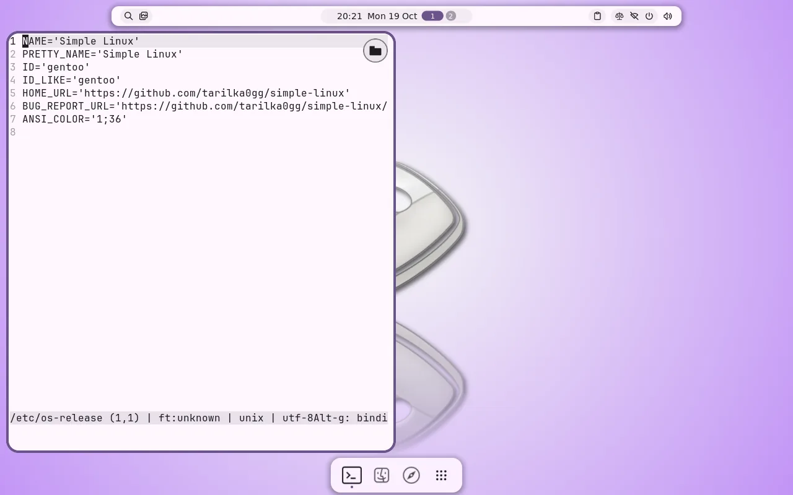
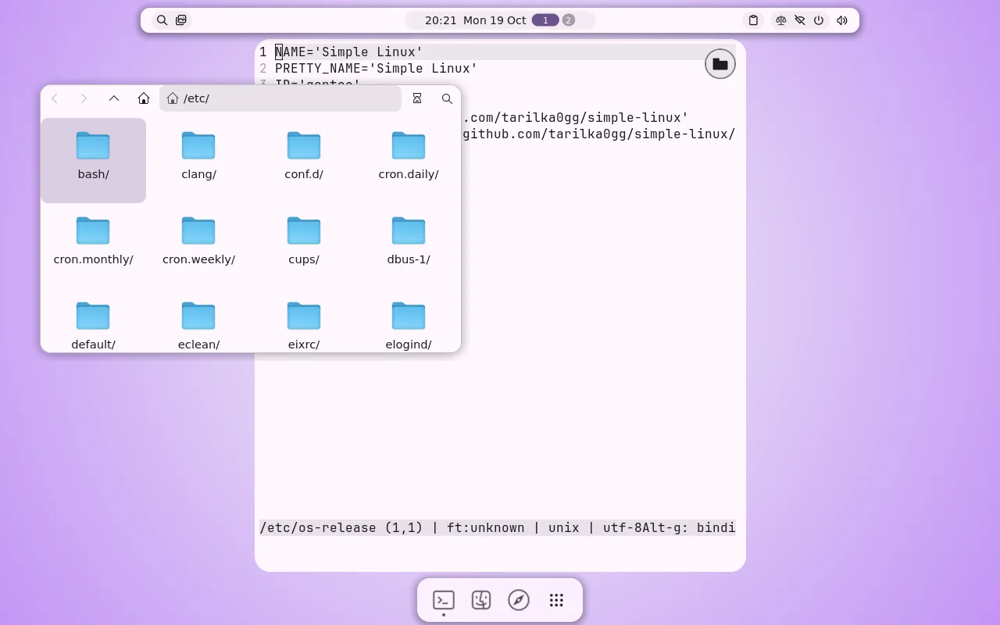
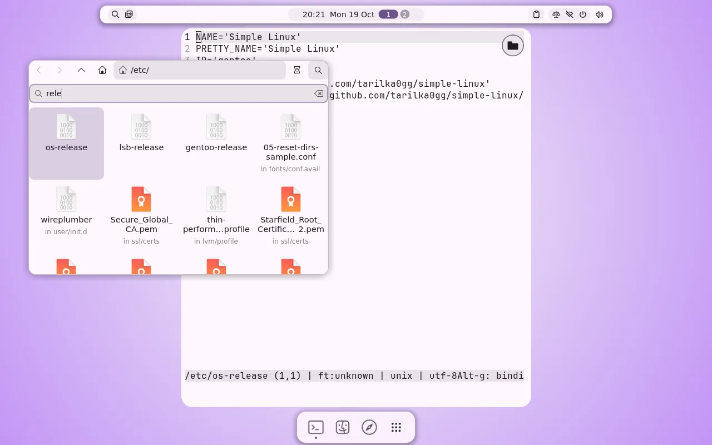
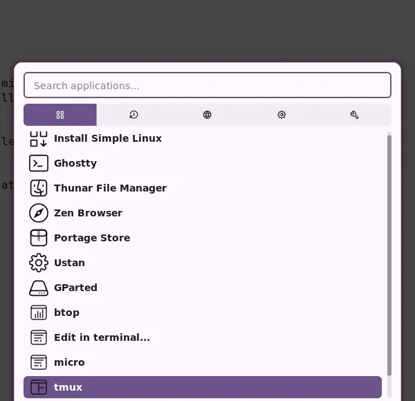
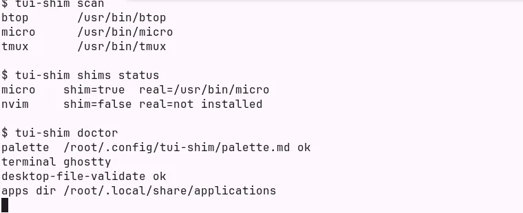

Projects /
tui-shim
Terminal programs that behave like desktop apps: launcher entries with icons and palette themes, and a native file picker for micro and nvim that opens from a badge in the terminal window.
What it is
tui-shim makes terminal programs fit into a niri/Wayland desktop. One Rust binary has two independent features. The first is a launcher integration: it finds TUI apps such as btop, htop, yazi, micro, nvim and tmux, and gives each a normal menu entry with an icon and its own window class. The second, and the part that took most of the work, is an editor file picker: when micro or nvim runs in ghostty, a small round folder badge appears in the top-right corner of the window. Click it, or press F9, and a native file browser opens; the file you choose opens in the same editor window.
It exists for Simple Linux, where a newcomer who opens a terminal editor should not need to know how to type a path. Nothing runs as a daemon: everything starts on demand when the editor launches.


Screenshots were taken in the Simple Linux live session in a virtual machine.
How the picker works
The editor does not run directly on the terminal. tui-shim opens a pty, runs the editor on the slave side and bridges it to the real terminal. Because it owns the pty it can do three things:
- Draw the badge with the kitty graphics protocol, placed over cells in the top-right corner. It is re-placed on resize and re-uploaded if the editor sends a kitty delete command.
- Read and filter input. A click on the badge cells is swallowed and reported as a click, F9 as a key, and any other click or typed key as "away". Reports go to a control socket in
$XDG_RUNTIME_DIR. - Type into the editor. Opening a file means sending the editor's own open command:
Ctrl-Ethenopen "<file>"for micro,Escthen:e <file>for nvim.
The picker itself is a GTK4/libadwaita app that holds no window between clicks. On a click it creates a small layer-shell surface next to the editor, with a navigation bar (back, forward, up, home, recents, path entry, search) and a grid of folders and files. The folder and scroll position, and 30 recent files, are remembered between runs.
Plain micro and nvim are wrapped by symlinks to tui-shim in ~/.local/bin (tui-shim shims install). The shim hands straight to the real editor when stdin or stdout is not a terminal, when any argument starts with -, or when there is more than one argument, so scripts, pipes and git commit are not affected.
Where does the panel go?
niri reports no position for tiled windows, only for floating ones. So placement is a decision tree: a floating window gives an exact position; a tiled window whose workspace columns all fit on the monitor is computed from the column widths and the gap; anything else (a scrolled strip, which is common) uses a probe. For the probe, the wrapper redraws the badge for a moment with its colour changed by 3 in blue, which is invisible, the overlay takes one grim screenshot and looks for that exact colour. That takes about 90 to 200 ms. If grim is missing or the probe fails, the panel is centred near the top of the monitor.


The launcher side
Apps are described in registry/*.toml (btop, htop, yazi, nvtop, micro, nvim, tmux, nmtui, lazygit, ncdu). For each installed app, tui-shim sync writes a .desktop entry that opens it in your terminal with its own window class, finds an icon (installed icon themes first, then Dashboard Icons or simple-icons, then a generated glyph) and recolours it from your system palette: a per-app theme file where the app supports one, a terminal ANSI override otherwise. If two copies of a program exist (~/.cargo/bin/yazi next to /usr/bin/yazi), tui-shim choose stores your pick in ~/.config/tui-shim/choices.toml and sync keeps honouring it. Config files it edits are backed up once as *.bak-tui-shim, and files it did not create are skipped without --force.
In Simple Linux, the fish setup runs tui-shim shims install and TUI_SHIM_LINE_ICONS=1 tui-shim sync --no-theme --offline once per user. The icons are line-drawn because Noctalia turns coloured or filled theme icons into black squares. The palette comes from the wallpaper through a Noctalia hook.
Using it
tui-shim scan [--unknown] # what's installed (--unknown: heuristic scan, slow)
tui-shim sync [APP] [--force] # entries + icons + themes (idempotent)
tui-shim theme [APP] # themes only
tui-shim clean # remove only entries/icons it created
tui-shim choose [APP] # pick system vs user-installed copy
tui-shim edit [FILE] [--new] # "Open with" editor picker, or start a new file
tui-shim open APP [FILE] # start an editor with the badge/picker
tui-shim shims [install|remove|status] # make plain `micro`/`nvim` use it
tui-shim niri-rule # optional window-rule snippet
tui-shim doctorGlobal flags: --dry-run, --offline, --palette FILE. Build with Rust 2024; cargo build --release --no-default-features builds only the launcher and theme tooling, without GTK. A Gentoo live ebuild is in packaging/gentoo/.

scan, shims status and doctor.What was tested, and what was not
The integration handoff document lists 30 unit tests (input filter, badge geometry, probe blob finder, registry, files, palette). I also drove the wrapper under a pty from Python, checking that every badge cell registers a click and cells outside do not. Layout behaviour was tried in a nested niri with ghostty and grim, which cannot inject real pointer input, and I tested interactively on my real session after each change.
Limits I know about: it works only on niri (tracking, focus and probe use niri msg). Only ghostty has been tested; kitty should work but was never run. Multi-monitor, rotated outputs and fractional scales other than 1.25 were not tested. Editors run as root are not wrapped. Only micro and nvim know how to open a file; the flicker I saw with a LazyVim setup on focus change is explained but not proven fixed. The badge needs a terminal that supports the kitty graphics protocol, and placement next to a scrolled niri window needs grim.
The handoff document is dated 2026-10-14 and some of its statements (no CI, version fixed at 0.1.0) were true on that day only; the repo has a CI workflow now, and the changelog is the better guide to what changed since.
Related
tui-shim is part of Simple Linux and sits beside ustan, the installer for downloaded packages. Source: github.com/tarilka0gg/tui-shim; packagers should read docs/INTEGRATION.md there first.